01 · 자유도 높은 단어 테마 입력 및 생성
아이의 나이와 언어, 원하는 주제를 입력받아 학습 자료를 맞춤 생성합니다.
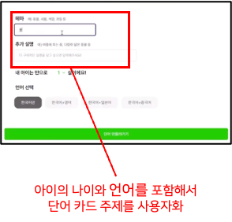
EPSON 프린터기와 AI를 결합한 단어 카드 서비스. 사용자 입력에 따라 다양한 어휘를 노출해주는 카드를 생성하고 출력합니다.
디지털 콘텐츠의 일상화로 문서 출력 중심의 프린터 수요가 줄어드는 상황에서, 실물 출력물이 가치를 만드는 새로운 사용자 맥락을 탐색했습니다.
문서 출력 중심의 프린터 수요 감소
직접 보고 만지는 실물 교구가 필요한 유아의 학습·놀이
전자기기와 디지털 매체에 익숙하며, 아이에게 맞는 자료를 쉽고 빠르게 찾고 싶습니다.
디지털 매체보다 직접 보고 만지는 행동 중심의 놀이와 실물 교구에 익숙합니다.
인쇄기 자체의 기능보다 사용자가 인쇄를 필요로 하는 이유에서 출발했습니다. 부모의 편리한 자료 제작과 아이의 실물 학습 경험을 연결하는 서비스로 방향을 정했습니다.
자녀를 둔 학부모 40명을 대상으로 2024년 6월 18일부터 22일까지 Google Forms 설문을 진행했습니다.
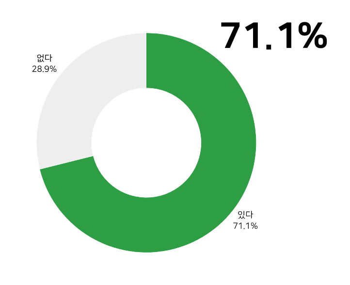
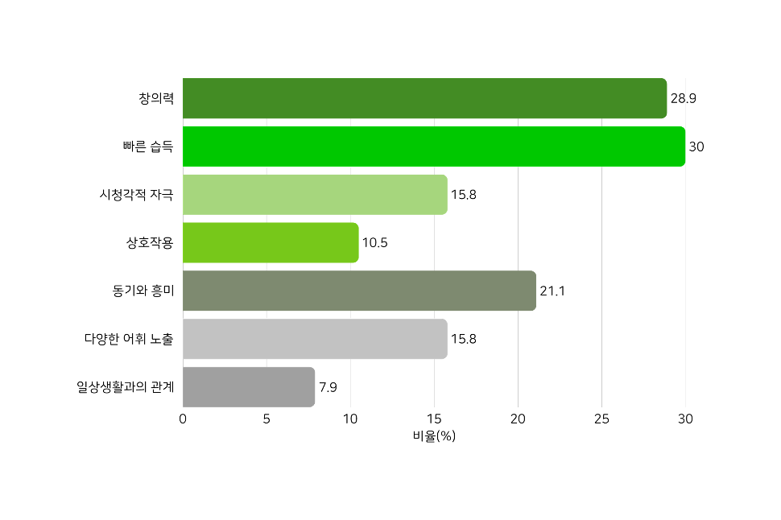
유아 학습에는 직접 만지고 활용할 수 있는 카드 등의 교구가 필요하지만, 부모가 매번 구매하거나 아이에게 맞는 자료를 찾는 과정은 번거로웠습니다.
PM이자 프론트엔드 개발자로 서비스의 기초를 설계하고, 사용자 테스트 결과를 반영해 완성도를 높였습니다.
대기 시간 최소화: 평균 10초의 단어 생성 지연을 해소하기 위해 실시간 업데이트 구조로 전환했습니다.
학습 경험 확장: 학습한 단어 목록을 ‘단어 성장 일지’로 제공해 학습 과정을 추억으로 남기도록 개선했습니다.
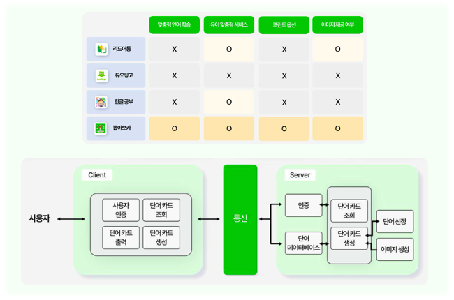
사용자 입력에 따라 다양한 어휘를 노출하고, 아이가 창의력을 펼칠 수 있는 AI 기반 단어 카드 서비스 ‘뽑아보카’를 기획했습니다.
아이의 나이와 언어, 원하는 주제를 입력받아 학습 자료를 맞춤 생성합니다.

생성한 단어 카드에 템플릿을 적용하고 EPSON Connect API를 통해 출력으로 연결합니다.
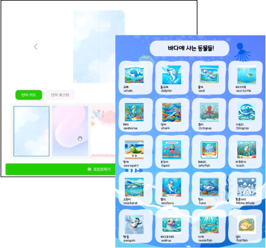
학습한 단어를 날짜별로 누적하고, 부모가 원하는 메시지도 함께 기록할 수 있도록 설계했습니다.
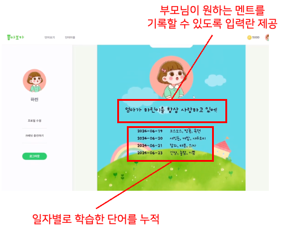
자석 용지와 코팅지를 활용해 출력물을 실제 놀이·학습 교구로 사용할 수 있도록 했습니다.
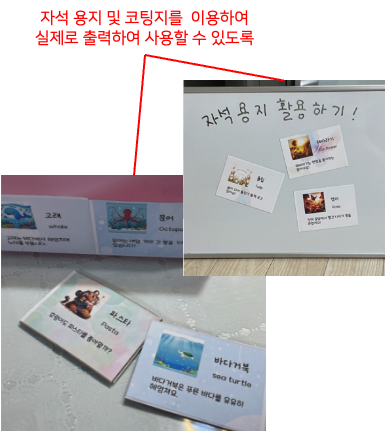
카테고리·설명·나이 입력으로 시작해, 생성 결과에서 발견한 문제를 기준으로 프롬프트를 단계적으로 개선했습니다.
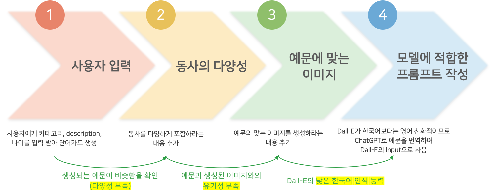
서비스의 비용과 안정성에 맞게 AI 설계 범위를 조정하는 것 역시 기획자의 역할임을 경험했습니다.
사용자 상황에서 찾은 인쇄 수요를 AI 기반 맞춤 단어 카드 서비스로 구현해 2024 Epson Challenge 장려상을 수상했습니다.
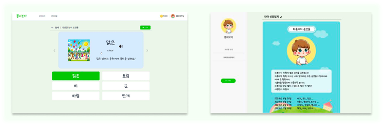
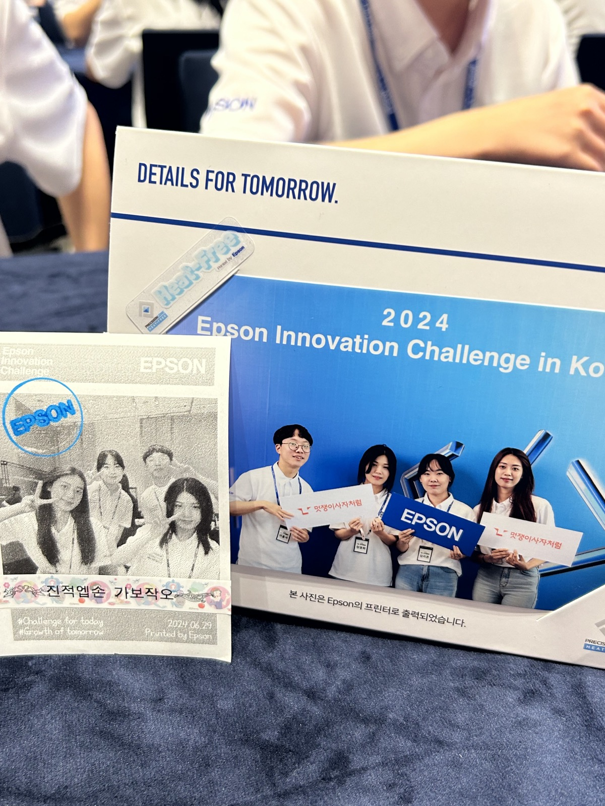
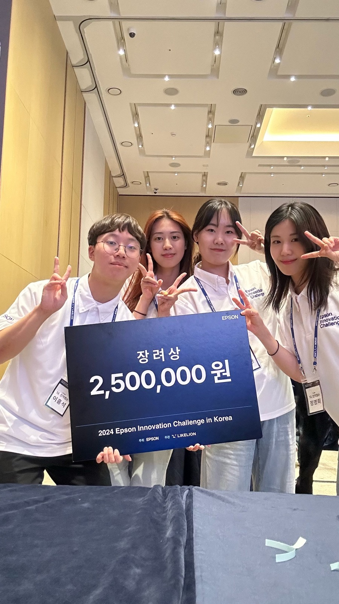
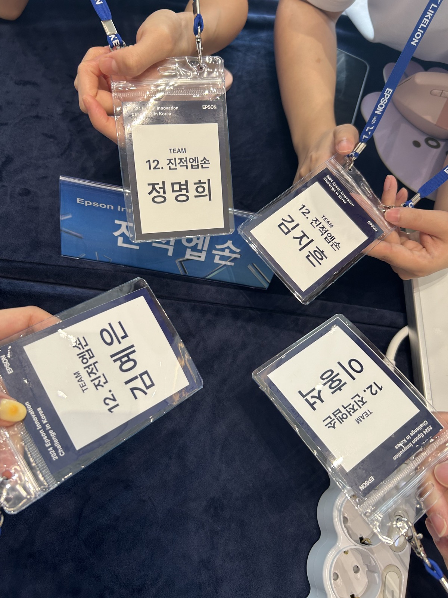
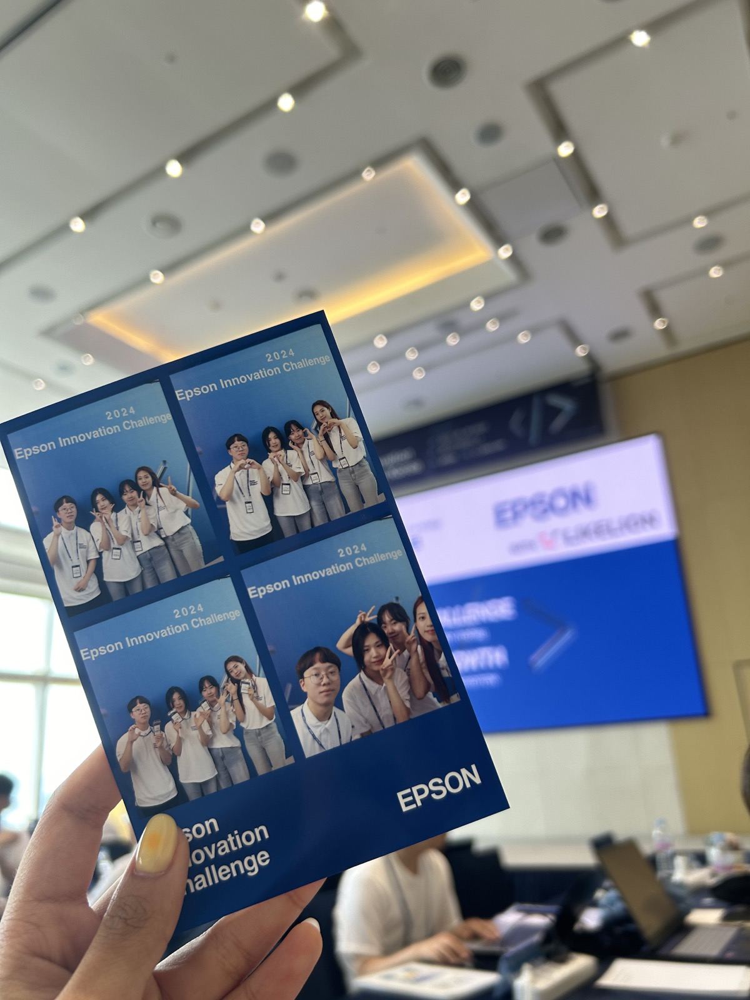
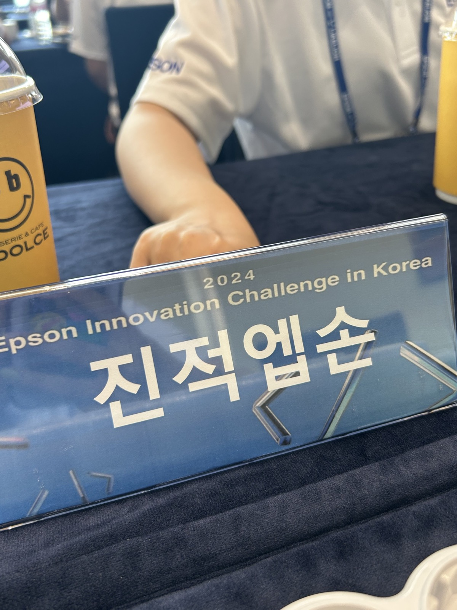
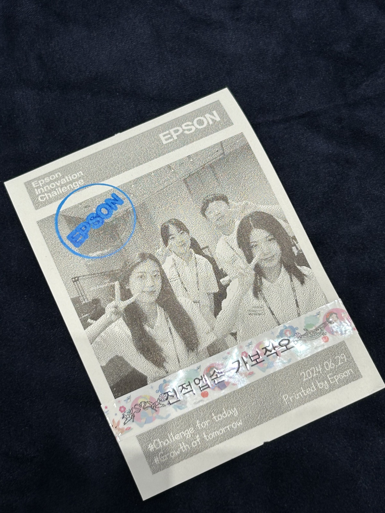
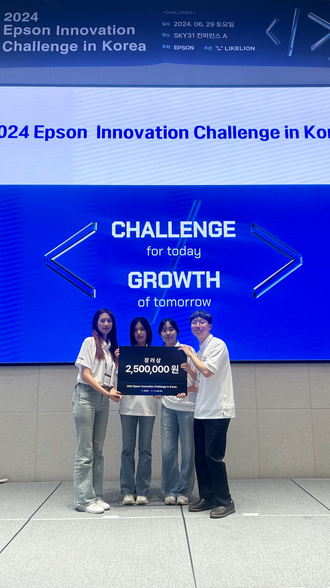
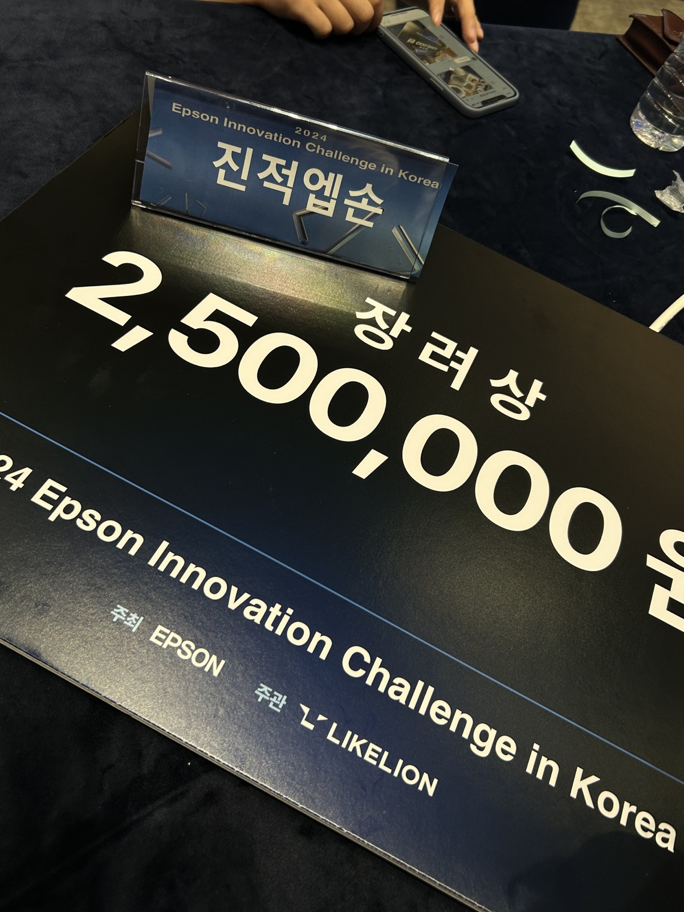